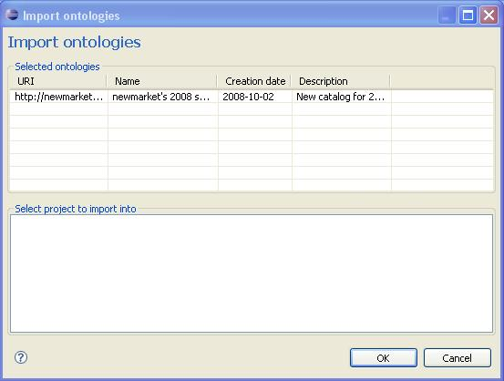

The NeOn Toolkit Oyster GUI is able to import ontologies into NeOn Projects. To do
so, these must be in the lists of results obtained from an Oyster server, and the
project must already exist. The other requisite is that the ontologies must be accessible
by http or ftp protocols.
The first step is to make a search that will return
ontologies. Once the list of ontologies is shown, the user can choose to import any one
of them. To do so, select a result and use the right button of the mouse to bring up
the context menu where it will allow you to choose to download an ontology.
Once you have done so, a new dialog will appear. It will show the selected ontologies
that are about to be imported, and a list of existing projects. At this point the
only choice is to select the project where the ontology will get imported into. All
ontologies in the dialog will be imported, regardless of the selection of them the
user makes here (thus the user must be careful selecting from the results view).

When the user presses the OK button the importation process begins. Bear in mind it may take a while, since the ontologies must be get from web and ftp servers, which in turn may be busy or even not working anymore.